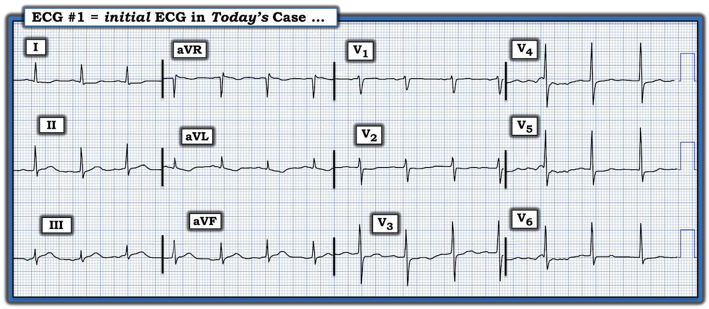
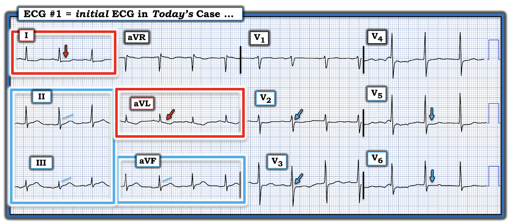
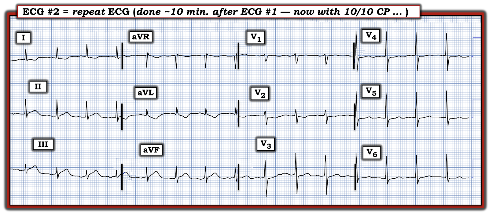
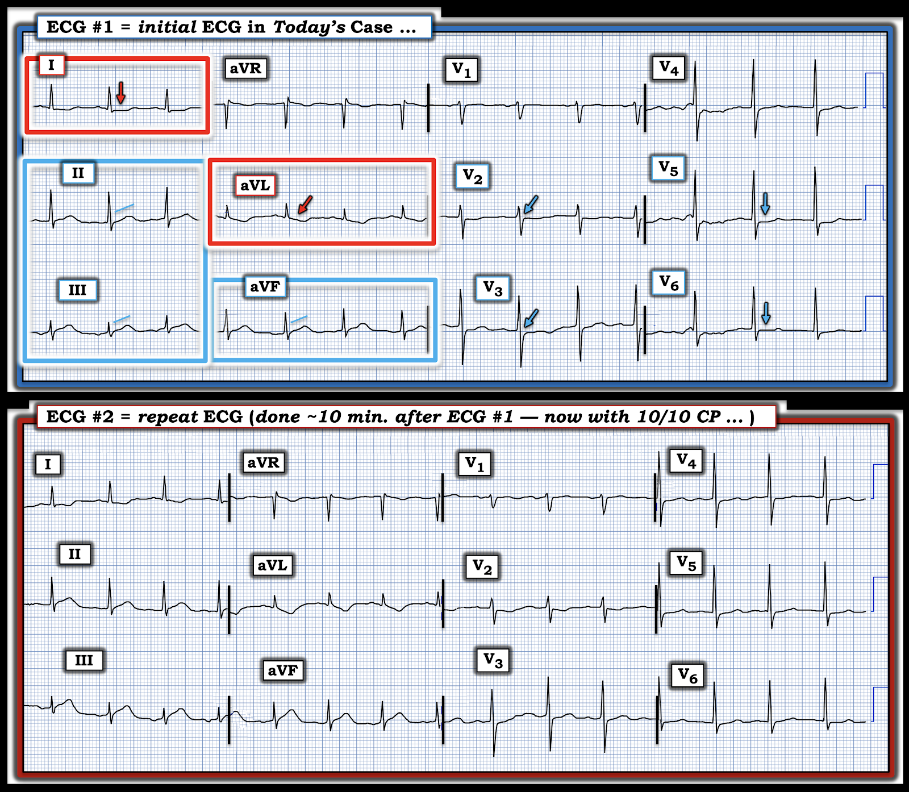
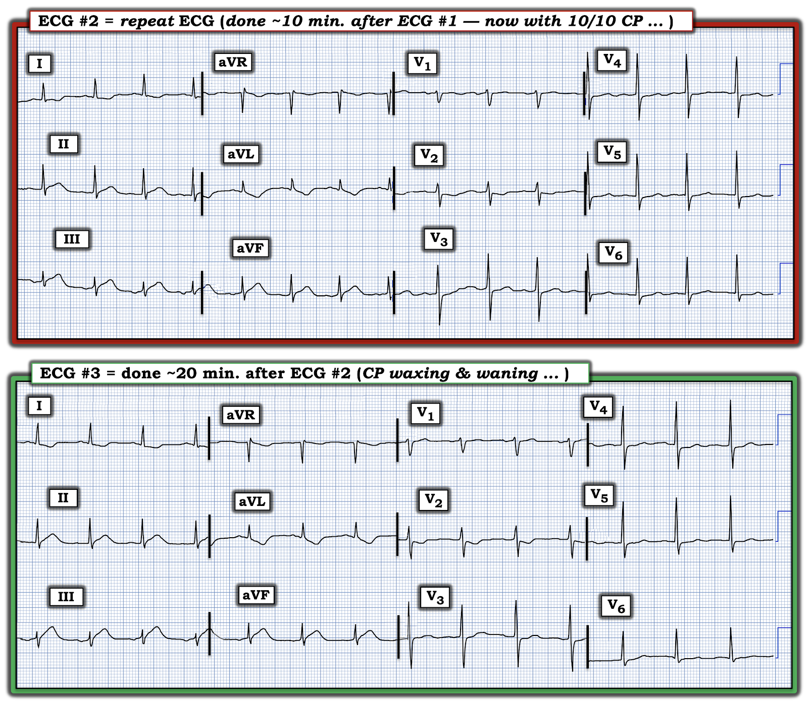

ECG Blog #474 — "Hãy tin tôi & tin các điện tâm đồ của tôi"
Điện tâm đồ ở Hình-1 là của một người đàn ông ngoài 60 tuổi — đến khoa cấp cứu – ED (Emergency Department) vì mới khởi phát đau ngực – CP (Chest Pain).
- Bệnh nhân kể có đau ngực từng cơn trong 2-3 ngày trước đợt này.
- Đợt đau tối nay bắt đầu ~1 giờ trước khi đến ED. Mức độ đau ngực =10/10 tại thời điểm ghi điện tâm đồ ở Hình-1.
CÂU HỎI:
Với bệnh sử nêu trên:
- Bạn sẽ đọc điện tâm đồ ban đầu ở Hình-1 như thế nào?


Suy nghĩ BAN ĐẦU của tôi về ca bệnh hôm nay:
Đau ngực mới khởi phát mức độ 10/10 ở một người đàn ông ngoài 60 tuổi là một tình huống lâm sàng đáng lo ngại, ngay lập tức xếp bệnh nhân này vào nhóm nguy cơ cao hơn về một biến cố cấp. Vì vậy — gánh nặng "chứng minh" thuộc về chúng ta: phải loại trừ một biến cố cấp (chứ không phải phải "xác lập" một biến cố cấp). Những điểm CHÍNH gồm:
- Với bệnh sử trên — bất kỳ bất thường điện tâm đồ nào trên bản ghi ban đầu của bệnh nhân này cũng phải được coi là đáng lo ngại.
- Và nếu điện tâm đồ ban đầu của bệnh nhân không thấy dấu hiệu chẩn đoán nào — thì đặc biệt vì đợt đau ngực cấp của bệnh nhân chỉ mới bắt đầu 1 giờ trước khi đến ED, cần ghi lại điện tâm đồ trong vòng 15-30 phút.
- Việc bệnh nhân này đã đau ngực từng cơn trong 2-3 ngày trước đó có thể làm phức tạp việc đọc điện tâm đồ ban đầu. Đó là vì một biến cố có thể đã xảy ra từ 2-3 ngày trước (khi bệnh nhân bắt đầu đau ngực) — và nếu sau đó động mạch "thủ phạm" được tái tưới máu tự phát — thì điện tâm đồ ban đầu có thể không có gì hơn ngoài những bất thường kín đáo (tức là, nếu điện tâm đồ ban đầu được ghi trong giai đoạn giả bình thường hóa (pseudo-normalization)).
ĐIỂM THEN CHỐT (PEARL) #1:
Nhiều người làm cấp cứu vẫn chưa nhận thức được thực tế lâm sàng rằng quá trình tắc động mạch vành cấp (tức là OMI cấp) — thường không phải là một biến cố cố định duy nhất.
- Thay vì một biến cố cố định duy nhất — điều thường xảy ra là động mạch vành "thủ phạm" bị tắc (kéo theo đau ngực cấp và ST chênh lên) — nhưng rồi vài phút đến vài giờ sau, mạch thủ phạm tự mở thông trở lại (kèm theo giảm hoặc thậm chí hết đau ngực, xảy ra đồng thời với việc đoạn ST trở về gần bình thường).
- Tiếp theo đó là sự xuất hiện của "sóng T tái tưới máu" (reperfusion T waves) — dưới dạng ST chênh xuống hoặc sóng T đảo ngược xuất hiện trong vài phút, vài giờ hoặc đôi khi 1-2 ngày sau khi dòng chảy mạch vành được tái lập.
- Vì quá trình trên có thể xảy ra nhiều hơn một lần (tức là động mạch "thủ phạm" có thể tự tắc — rồi mở lại — rồi lại tắc lần nữa) — nên trạng thái sau cùng của động mạch "thủ phạm" có thể là bất kỳ tình trạng nào vào thời điểm ghi điện tâm đồ ban đầu.
Điện tâm đồ ban đầu ở Hình-1:
Với những cân nhắc trên — tôi cho rằng điện tâm đồ ban đầu trong ca hôm nay biểu hiện một số dấu hiệu đáng lo ngại mà tôi đã đánh dấu ở Hình-2.
- Cần lưu ý — sóng P biên độ rất thấp ở chuyển đạo II, cùng sóng P âm nhỏ ở chuyển đạo III và sóng P dương ở chuyển đạo aVL — gợi ý có thể là nhịp nhĩ thấp. Đây có thể là một biến thể nhịp bình thường — không làm thay đổi việc đánh giá các thay đổi ST-T cấp tiềm tàng.
- Ngoài nhịp — "mắt" tôi ngay lập tức bị thu hút vào chuyển đạo bên cao I và đặc biệt là aVL (trong các hình chữ nhật ĐỎ ở Hình-2). Ở bệnh nhân đau ngực mới này — không còn nghi ngờ gì rằng đoạn ST thẳng đuỗn, dốc xuống ở chuyển đạo aVL và ST chênh xuống dẹt dạng bậc thềm (shelf-like) ở chuyển đạo I là bất thường.
- ĐIỂM THEN CHỐT (PEARL) #2: Do mối quan hệ ST-T soi gương đối nghịch "thần kỳ" giữa chuyển đạo III và chuyển đạo aVL tồn tại trong OMI thành dưới cấp — tôi luôn soi xét thật kỹ thành viên thứ 2 của cặp chuyển đạo III-aVL này khi thành viên thứ 1 trông bất thường.
- Tuy kín đáo — có đoạn ST thẳng đuỗn kèm ST chênh lên nhẹ ở chuyển đạo III — tạo nên hình ảnh soi gương đối nghịch với đoạn ST thẳng đuỗn, dốc xuống mà chúng ta thấy ở chuyển đạo aVL (Xem ECG Blog #171 — để biết thêm về mối quan hệ "thần kỳ" giữa chuyển đạo III-aVL này).
- Bằng chứng cho thấy đoạn ST thẳng đuỗn kín đáo kèm gợi ý ST chênh lên nhẹ ở chuyển đạo III là "thật" — đến từ hình dạng đoạn ST tương tự ở 2 chuyển đạo dưới còn lại ( = chuyển đạo II và aVF — trong các hình chữ nhật XANH).


Còn các chuyển đạo trước ngực ở Hình-2 thì sao?
Bằng chứng khẳng định thêm cho mối lo ngại về một OMI thành dưới cấp đang diễn tiến — đến từ hình ảnh của chuyển đạo V2 và V3 ở Hình-2:
- ĐIỂM THEN CHỐT (PEARL) #3: Do ở hầu hết bệnh nhân, thành dưới và thành sau thất trái có chung nguồn cấp máu — việc thấy gợi ý OMI thành sau cấp củng cố thêm rằng những dấu hiệu chưa chắc chắn ở chuyển đạo chi nhiều khả năng là "thật".
- Đây chính xác là điều chúng ta thấy ở Hình-2. Như thường được nhấn mạnh trong ECG Blog này — bình thường có ST chênh lên nhẹ, dốc lên ở chuyển đạo V2 và V3. Tuy nhiên, các mũi tên XANH ở những chuyển đạo này cho thấy, nếu có gì thì — đó là ST chênh xuống nhẹ ở V2,V3 kèm đoạn ST dẹt.
- Đoạn ST dẹt bất thường tiếp tục ở chuyển đạo V4 — ngoài ra còn có ST chênh xuống nhẹ ở chuyển đạo V5 và V6.
Nhận định về điện tâm đồ #1:
Ở bệnh nhân này có triệu chứng từng cơn trong 2-3 ngày, nay đến với đau ngực 10/10 mới — khi nhìn điện tâm đồ ban đầu này, cần thấy rõ rằng gần như chắc chắn sẽ cần thông tim khẩn trương:
- Cần nghi ngờ mạnh chẩn đoán OMI dưới-sau cấp từ điện tâm đồ ban đầu này. Việc ST chênh lên chưa đủ để thỏa tiêu chuẩn STEMI có thể là hậu quả của một mức độ giả bình thường hóa sau khi động mạch "thủ phạm" được tái tưới máu tự phát phần nào.
- Đoạn ST dẹt kèm chênh xuống nhẹ lan ra tới các chuyển đạo trước ngực bên V5,V6 có thể phản ánh bệnh nhiều nhánh mạch vành.
- Ghi lại điện tâm đồ ban đầu này sau một khoảng thời gian ngắn có thể cho hình ảnh điện tâm đồ rõ ràng hơn.
- Điện tâm đồ chuyển đạo bên phải cũng có thể giúp ích (tức là Vì chúng ta nghi ngờ mạnh tắc RCA cấp — tổn thương thất phải cấp có thể đang làm giảm bớt mức ST chênh xuống ở các chuyển đạo trước mà lẽ ra sẽ thấy trong OMI thành sau).
=======================
Ca bệnh tiếp diễn:
Bệnh nhân được cho ASA (aspirin) và bác sĩ tim mạch hội chẩn đã được gọi.
- Điện tâm đồ ban đầu được ghi lại — và được trình bày ở Hình-3. Bệnh nhân vẫn tiếp tục đau ngực 10/10.
- — BẠN sẽ đọc điện tâm đồ ghi lại này thế nào?


Điện tâm đồ ghi lại:
Người ta không ghi nhận thay đổi đáng kể nào giữa điện tâm đồ #2 và điện tâm đồ #1.
=======================
ĐIỂM THEN CHỐT (PEARL) #4: Cực kỳ DỄ bỏ sót những thay đổi kín đáo giữa các bản ghi liên tiếp nếu xem riêng từng điện tâm đồ. Có vẻ đây chính là điều đã xảy ra trong ca hôm nay.
- Để minh họa điểm này — tôi đã đặt điện tâm đồ ghi lại ngay bên dưới bản ghi ban đầu ở Hình-4.
- — Chẳng phải cách sắp xếp ở Hình-4 này giúp dễ dàng hơn nhận ra những khác biệt kín đáo-nhưng-có-thật giữa 2 bản ghi này sao?


So sánh điện tâm đồ ban đầu và điện tâm đồ ghi lại:
Xin nhắc lại — việc thứ 1 cần làm khi so sánh các bản ghi liên tiếp để tìm thay đổi cấp — là so sánh trục mặt phẳng trán và hình dạng QRS ở các chuyển đạo trước ngực. Đó là vì thay đổi trục và/hoặc thay đổi hình dạng QRS ở chuyển đạo trước ngực có thể góp phần tạo ra khác biệt về hình ảnh ST-T mà không phải do thiếu máu cục bộ tăng lên.
- May mắn là ở Hình-4 — cả trục mặt phẳng trán lẫn hình dạng QRS ở điện tâm đồ #2 về cơ bản không thay đổi so với điện tâm đồ #1. Điều này có nghĩa là ngay cả những khác biệt ST-T tối thiểu có thể thấy giữa 2 bản ghi này cũng nhiều khả năng là "thật".
- Về các chuyển đạo trước ngực, ngoài sóng T đảo ngược sâu hơn một chút ở chuyển đạo V2 của điện tâm đồ #2 — không có khác biệt ST-T đáng kể ở 5 chuyển đạo trước ngực còn lại.
- Ngược lại, đã có thay đổi về hình ảnh ST-T ở các chuyển đạo chi, cụ thể là: i) ST-T ở chuyển đạo III và aVF trông tối cấp hơn so với ở điện tâm đồ #1 (ST-T trông "đồ sộ" hơn ở các chuyển đạo này — với đỉnh sóng T cao hơn và ST chênh lên tại điểm J nhiều hơn); — và, ii) ST chênh xuống soi gương ở chuyển đạo I và aVL của điện tâm đồ #2 sâu hơn, và trông "cấp" hơn.
ĐIỂM THEN CHỐT (PEARL) #5:
Tôi đánh giá các thay đổi ST-T mà chúng ta thấy giữa 2 bản ghi ở Hình-4 là "thật" — vì chúng hiện diện ở ít nhất 5 chuyển đạo.
Ở bệnh nhân đau ngực 10/10 này — các dấu hiệu trên đủ tiêu chuẩn là một thay đổi ST-T "động" (dynamic). Điều này củng cố chẩn đoán OMI dưới-sau cấp cho đến khi chứng minh được điều ngược lại.
- ĐIỀU CỐT LÕI: Tại thời điểm này của ca hôm nay (tức là ngay khi tôi thấy điện tâm đồ #2 — được ghi chỉ hơn 10 phút sau khi đến ED) — tôi cho rằng chỉ định rõ ràng cho thông tim khẩn trương kèm PCI lúc này đã được xác lập.
=======================
Ca bệnh tiếp diễn:
Mức độ đau ngực của bệnh nhân lúc tăng lúc giảm trong vài phút sau đó — nhưng rồi trở lại mức 10/10.
- Như trình bày ở Hình-5 — điện tâm đồ thứ 3 được ghi tại ED, khoảng 20 phút sau điện tâm đồ #2. Không rõ mức độ đau ngực của bệnh nhân tại thời điểm ghi điện tâm đồ #3.
- Cả 3 bản ghi được khoa tim mạch xem xét và kết luận: "điều trị như NSTEMI" — với kế hoạch chuyển tới một trung tâm có khả năng thông tim vào sáng hôm đó. Việc chuyển viện được thực hiện hơn 6 giờ sau khi bệnh nhân đến ED.
CÂU HỎI:
- Suy nghĩ của bạn về ca này sau khi xem điện tâm đồ #3?


Đánh giá điện tâm đồ #3 ở Hình-5:
OMI dưới-sau cấp đã tiến triển thêm ở điện tâm đồ #3.
- Cả 3 chuyển đạo dưới đều cho thấy ST-T tăng tính tối cấp ở Hình-5. Điều này thấy rõ nhất ở chuyển đạo III — nơi ST-T "quá đầy đặn" (hypervoluminous) nay đã vượt quá chiều cao sóng R ở chuyển đạo này.
- Mức tăng tính tối cấp tương tự cũng thấy ở độ sâu của ST chênh xuống soi gương ở chuyển đạo I,aVL — và ở sóng T đảo ngược tại chuyển đạo V2. ST cũng chênh xuống nhiều hơn ở chuyển đạo V4,V5,V6.
- ĐIỀU CỐT LÕI: Không còn nghi ngờ gì về chẩn đoán nữa. Đây không phải "NSTEMI". Thay vào đó — bệnh sử cùng với các thay đổi ST-T "động" tiến triển trên các điện tâm đồ liên tiếp là chẩn đoán của một OMI cấp dẫn tới OMI dưới-sau đang diễn tiến.
Diễn tiến cuối cùng:
- Thông tim mạch vành được thực hiện vào cuối buổi sáng hôm đó tại bệnh viện tiếp nhận chuyển viện. Kết quả xác nhận rằng tổn thương tắc 99% RCA thấy khi thông tim đúng là mạch "thủ phạm".
- Đáng tiếc — việc không nhận ra tắc động mạch vành cấp từ 3 điện tâm đồ liên tiếp ghi tại ED đã dẫn tới chậm trễ hơn 6 giờ cho đến khi thông tim và PCI cuối cùng được thực hiện.
==================================
Lời cảm ơn: Xin cảm ơn Frank Maggio (Florida, Hoa Kỳ) đã chia sẻ ca bệnh và bản ghi này.
==================================
Để có Thêm Tài liệu — về việc đọc điện tâm đồ trong các OMI (không thỏa tiêu chuẩn STEMI dựa trên milimét).

- Trong "My ECG Podcasts" — Hãy xem ECG Podcast #2 (Những lỗi đọc điện tâm đồ dẫn tới bỏ sót tắc động mạch vành cấp).
- Trong 'My ECG Videos" — Hãy xem gần đầu trang đó các VIDEO từ các bài giảng điện tâm đồ MedAll của tôi, ôn lại chẩn đoán nhồi máu cơ tim cấp trên điện tâm đồ — và cách nhận ra OMI cấp khi không đạt tiêu chuẩn STEMI (được điểm lại trong ECG Blog #406 — Blog #407 — Blog #408).
- Xin LƯU Ý — Với mỗi video trong 6 video MedAll ở đầu trang My ECG Videos, NẾU bạn bấm vào "More" trong phần mô tả, bạn sẽ thấy Mục lục có liên kết cho phép nhảy thẳng tới phần bàn luận các điểm cụ thể (tức là ở phút 5:29 trong video dài 22 phút của Blog #406 — bạn có thể nhảy tới "You CAN recognize OMI without STEMI findings!" (Bạn CÓ THỂ nhận ra OMI mà không cần dấu hiệu STEMI!) ).
T.B. (P.S.): Về một ca bệnh đáng suy ngẫm, khiến ta phải tỉnh táo, được bác sĩ tim mạch Dr. Willy Frick bàn luận — kèm Bình luận biên tập của tôi ở cuối trang (trong bài đăng ngày 17 tháng 3 năm 2025) — Hãy xem ca này.
- Như Dr. Frick và tôi đã nhấn mạnh — không chỉ "mô hình STEMI" hiện hành đã lỗi thời — mà trong những ca như ca chúng tôi mô tả, vì người điều trị chờ cho đến khi cuối cùng đạt tiêu chuẩn STEMI — nên thông tim và PCI đã bị trì hoãn hơn 1 ngày.
- NHƯNG — vì phòng thông tim được kích hoạt trong vòng 1 giờ sau điện tâm đồ cuối cùng đạt tiêu chuẩn STEMI — ca này sẽ được ghi vào các sổ đăng ký nghiên cứu là "rất thành công với việc kích hoạt phòng thông tim nhanh chóng trong vòng 1 giờ kể từ khi xác định "STEMI". Cách diễn giải sai lầm này về diễn biến sự việc hoàn toàn phớt lờ thực tế lâm sàng rằng bệnh nhân này đã mất đi một cách không cần thiết một lượng cơ tim đáng kể, vì điện tâm đồ ban đầu (ghi >24 giờ trước đó) rõ ràng đã chẩn đoán STEMI(-)/OMI(+) nhưng không được xử trí do người điều trị bị "mắc kẹt" vào quy trình STEMI.
- Hậu quả đáng tiếc là tạo ra y văn "ủng hộ" sai lầm, gợi ý tính đúng đắn của một mô hình đã lỗi thời và không còn chính xác.
- Thực tế lâm sàng: Nhiều trường hợp tắc động mạch vành cấp không bao giờ xuất hiện ST chênh lên (hoặc chỉ xuất hiện ST chênh lên muộn trong diễn tiến) — trong khi việc chú ý tới các tiêu chuẩn điện tâm đồ bổ sung trong các tài liệu tham khảo nêu trên có thể giúp chúng ta nhận ra OMI cấp ở nhiều ca STEMI(-) này.
==========================